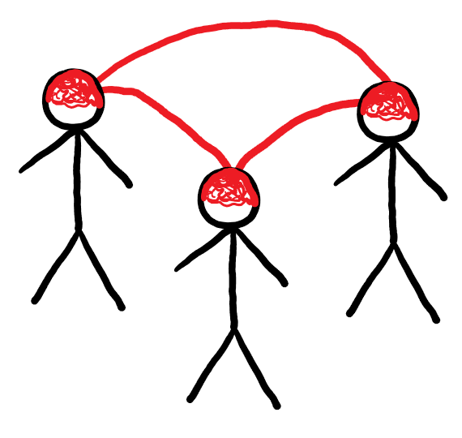
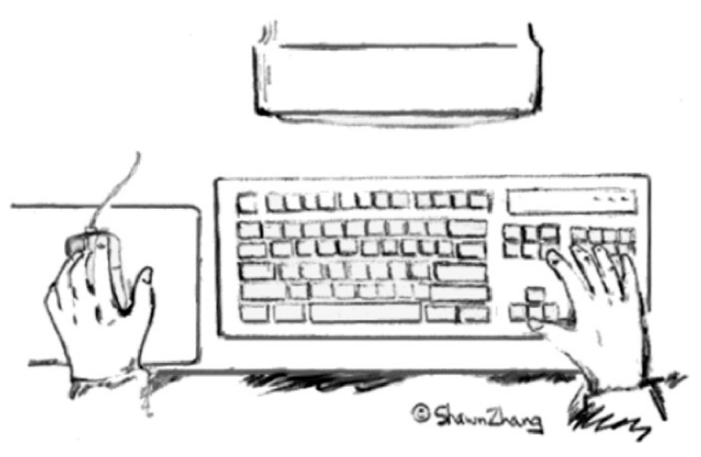
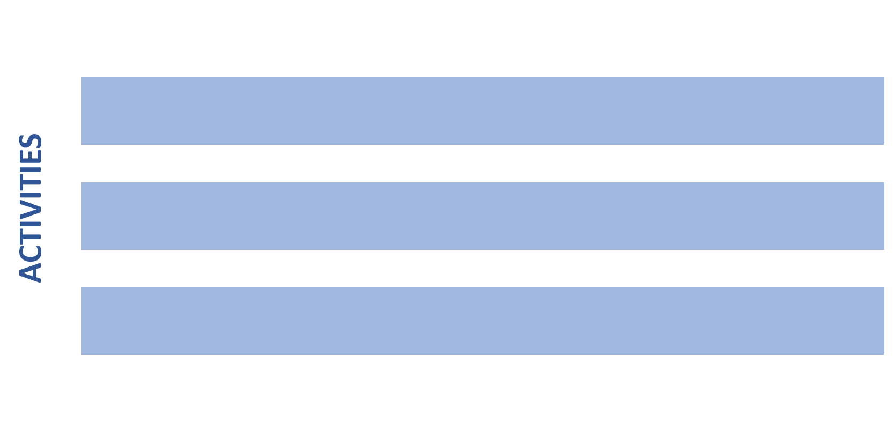

CO582: Computer Interaction and User Experience
Models and theories
Tomas Petricek
email: t.petricek@kent.ac.uk
twitter: @tomaspetricek
office: S129A
{kind=link}
Models and theories
Models and theories

How to design a user interaction?
- Look for problems and try to fix them
- Try whatever comes to mind!
- Try whatever, but test it empirically
- Follow good intuitions of experts
How to do it more systematically?
- Design a scientifically justified model
- Base decisions on the model
Models - what and why?
Model is a simplification of reality. It is useful
if it helps in designing, evaluating or otherwise
providing a basis for understanding the behavior
of a computer system.
A range of models
|
Metaphor |
Formula |
 |
\(ID=log_2(A/W+1)\) \(MT=a+b\times ID\) |
Different models have different aims
Predictive models
Know performance a priori
Make quantitative prediction
Descriptive models
Provide framework for thinking
Raise important design issues
Models by level of description
|
Perception |
 |
 |
Motoric |
|
Cognitive |
 |
 |
Social |
Three examples
❶ Motor model of bimanual skill
How to design interfaces for two hands
❷ Cognitive dimensions of notations
Comprehensive, high-level evaluation
❸ Distributed cognition model
Modelling systems with multiple participants
Motor model of bimanual skill
Models of keyboard and mouse entry
\(ID=log_2(A/W+1)\)
\(MT=a+b\times ID\)
Keystroke level model
Predictive model of hand moving towards a target

Key action model
Simple descriptive model of keyboard keys. Is this model correct?

Two-handed interaction paradigm
Sketching using a curve drawing tool
Bimanual control and desktop computing
Our hands have different roles & perform different tasks
|
Nonpreferred hand
|
Preferred hand
|
Bimanual control and desktop computing
What is this model good for?
Evaluating design: Will an operation be easy to do?
Informing design: How to improve usability?
Evaluation using bimanual model of interaction
Delete a file
Left: Move to a file icon & select
Right: Press the DELETE key
Learning from bimanual model of interaction

Scrolling panel
Use nonpreferred hand to set spatial frame of reference
Cognitive dimensions of notations
Notations and human computer interaction

Notations used in computing
- Programming languages
- Markup and config files
- Rule and macro editors
User experience questions
- Does the notation structure support activities of the user?
- Is one notation the best?
Cognitive dimensions of notations
Properties of the cognitive dimensions model
Comprehensible broad-brush evaluation
Understandable for non-specialists
Distinguish different user needs
Prompt designers to see more choices
Cognitive dimensions of notations
Generic activities with different requirements
Incrementation - e.g. adding formulas to spreadsheet
Transcription - e.g. copying data from paper
Modification - e.g. changing formula in a spreadsheet
Exploratory design - e.g. designing software structure
Searching - e.g. finding uses of a function
Exploratory understanding - e.g. understanding code
Cognitive dimensions of notations
Cognitive dimensions of notations

Cognitive dimensions of notations
Example cognitive dimensions (1/2)
Viscosity - resistance to change
Visibility - ability to view components easily
Premature commitment - constraints on work order
Hidden dependencies - important links not visible
Role-expressiveness - purpose of an entity is clear
Cognitive dimensions of notations
Example cognitive dimensions (2/2)
Error-proneness - notation invites mistakes
Abstraction - types and availability of mechanisms
Consistency - similar syntax means similar semantics
Diffuseness - verbosity of language
Hard mental operations - high cognitive demand

Case study
Two ways of specifying email filters
Visual rule editor vs. scripting language
Two ways of specifying email filters
 vs.
vs.

Incrementation
Adding new condition
Viscosity
Not all additions possible
Abstraction
Condition format is fixed
Hard mental operations Everything is simple & clear
Incrementation
Adding new condition
Viscosity
Edit text for any change
Abstraction
Possible via a script
Hard mental operations Understanding code is hard
Case study: Two ways of specifying email filters

Cognitive dimensions framework
- Framework for evaluation
- Consider activities & dimensions
- List of dimensions to consider
What is a better notation?
- Wrong question: different trade-offs!
- UI is viscose, less abstract, but simpler
- Script has abstractions, less viscose, but harder
Distributed cognition model

Analysing typical work situation
Multiple people, interacting with multiple computer systems

Analysing typical work situation
Multiple people, interacting with multiple computer systems
Distributed information processing system
Distributed cognition model
Properties of the model
- How humans & systems interact
- Extend the scope of UX research
- Most of work is teamwork
Mission-critical systems
- Air traffic control, ship navigation
- Hospital working with medical records
Distributed cognition model
Principles of distributed cognition model
Traditional cognitive science model
Uses the information processing metaphor
Same model for a machine and a user
Information representation and exchange is the key
Study of work in a hospital radiology unit

Mobile unit
Radiology unit working within a large hospital,
processing examination requests from other doctors
How does it work?
What are important practices?
Can computer system help?
Case study: Hospital radiology unit
Request Form (RF)
- Conveys request for patient examination
- Provide information about patient to radiographer
- Retains results of examination
Radiology unit practice
- Requests with background info received by phone
- Also needs information on location of equipment!
- Examination results stored in computer system
- 'Request Form' is used as a check
Case study: Hospital radiology unit
Surprising points we learned
Information about request comes before patient
Request not linked to patient details
Request form is token for examination
Computer system only at the end of examination
Summary
Models by level of description
|
Perception |
Motor |
Cognitive |
Distributed |
|
|
|
Examples of models we discussed
Motor model of bimanual skill
Roles of preferred and non-preferred hands
How to evaluate and improve interactions
Cognitive dimensions of notations
Activities and cognitive dimensions
Evaluating two ways of specifying mail filters
Distributed cognition model
Distributed information processing
Understanding radiology unit
CO582: Models and theories
What you should remember from this lecture
- Recognize predictive and descriptive models
- Metaphors, formulas & information processing models
- Motor, cognitive and distributed models
Tomas Petricek
t.petricek@kent.ac.uk | @tomaspetricek
References
Books
-
HCI Models, Theories and Frameworks, ed. J. Carroll
Chapter 3 (Motor behavior), Chapter 5 (Cognitive dimensions), Chapter 8 (Distributed cognition)
Papers